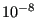

Next: List of variables and Up: Interpolation procedure Previous: Tetrahedron containment Contents
Another vital routine is the check whether the interpolation routine belongs to an element. Contrary to linear tetrahedrons elementy may have curved borders, therefore this check is more elaborate. The principal in two dimensions is shown in Figure 208.
The figure shows a quadratic quadrilateral plane face in global space (left) and local space (upper right). In local space the element is a square with side length 2. Now, the routine at stake looks for the location within the element which minimizes the distance from the interpolation location. If this distance is zero or small enough, the interpolation location belongs to the element. In order to do so a regular grid, e.g. with side length 0.1, is drawn about the origin in the local coordinate system. The distance from the interpolation location to the 8 locations on the grid around the origin (black filled circles in the figure) and the origin itself is calculated and evaluated (using the shape functions of the element): if the distance is smallest in the origin, a local minimum is found and the next finer level grid is used. If not, e.g. if the minimum is the upper right corner, a new grid of 9 locations is drawn about this minimum location (consisting partially of existing black filled circles and new black unfilled circles) and the procedure is repeated, until a local minimum is found, i.e. the distance is smallest at the center of the square grid of 9 locations. The path may for instance look is in the lower right part of the figure.
At the local minimum a new grid is created with a grid size of one tenth of
the previous grid (e.g. 0.01) and the procedure is repeated till a refined
position of the minimum is found. Then again the grid size is refined and so
on, usually up to a grid size of 